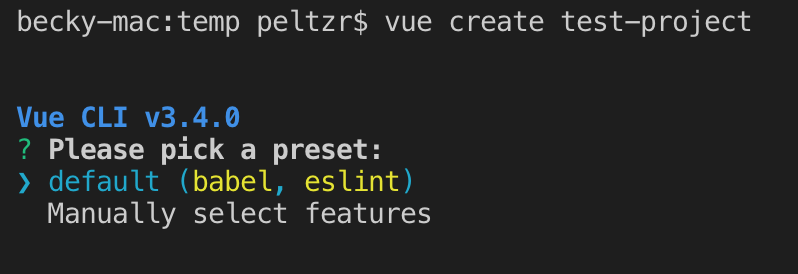
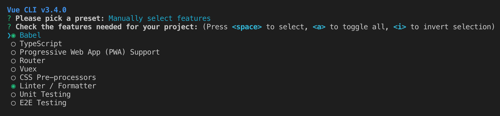
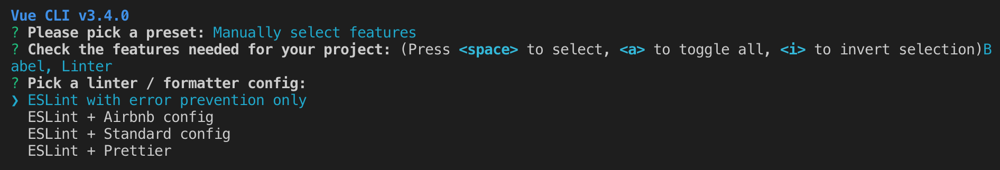
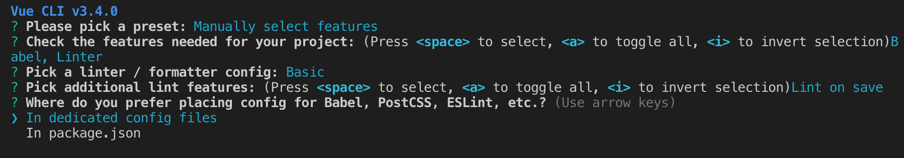
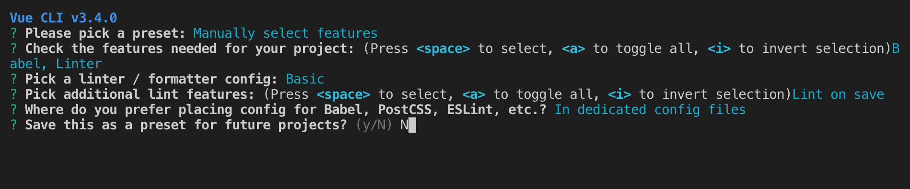
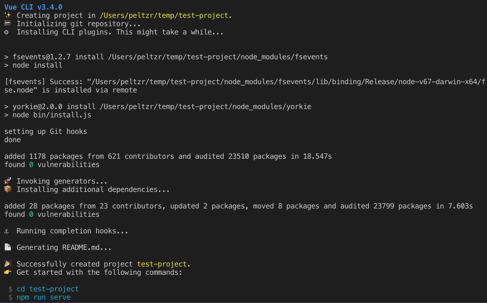
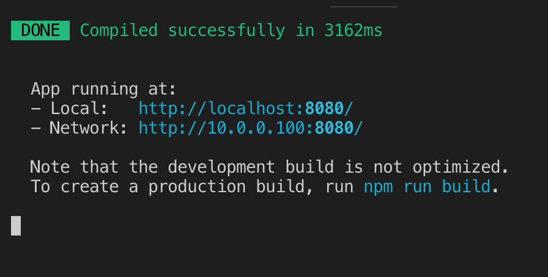

Creating a New Vue.js Application
Creating a new Vue.js application is a fairly straightforward process, and it is something that will become very easy once we understand the basics. It's often worthwhile to bootstrap a brand new project in order to try out some technique or idea outside of the complexity of a larger software system. Sometimes when debugging it's good to make a fresh project and then move parts of our code into that project in a methodical way in order to find the pieces that break. There are many other reasons why being able to quickly get up and running with a project is valuable.
Install Vue-CLI
In order to use the Vue-CLI tool, we must first install it. This software requires Node.js to work, and it can be installed using NPM. To install Vue-CLI in our development environment, run this command:
npm install -g @vue/cli
This will install Vue-CLI globally so we can use it anywhere. Once the installation is complete, we can check the version that was installed by running vue --version. If everything went smoothly, we should see the version number displayed. We can also run vue --help to see a list of commands we can use, or to get more information about specific commands.
vue-cli
Installing "local" Versus "global" Dependencies
When we set up our development environments, we want to keep in mind that we may be working on many different projects throughout our career as developers. This means we need to keep a development environment that is robust enough to work for us, but not so specific that it won't work on the next project we undertake. Because of this, we usually install "local" versions of the dependencies our project requires.
Consider the way we installed all of those dependencies into the node_modules/ directory in our project in the last section. All of those dependencies were "local" to the project because they were installed in a directory within the project repository.
However, there are some tools we might need to use across multiple projects. This often happens with tools like Vue-CLI, which can be used to bootstrap and work with many different projects. In these cases, we want to install the tools "globally" so that we can use them in any project.
When installing applications with Node Package Manager (NPM), we use the -g flag to install any Node module "globally" so that it can be used in any project. When we install Vue-CLI we use the -g flag so that we can run the vue command from anywhere.
NOTE: In this book we are using version 3 of the CLI. Version 2 of the Vue CLI was available in a package called vue-cli. NPM provides the @<organization>/ prefix to create scoped packages. Scoped packages provide namespacing so that an organization can create multiple packages under a single name. If you have installed version 2 of the Vue CLI you will need to uninstall it using this command npm uninstall vue-cli -g.
It's important to see the distinction between the Vue framework code which is not installed globally and the Vue CLI code which is installed globally. You will see an entry in your package.json file to install Vue locally.
Once you have installed @vue/cli globally you can keep it updated without uninstalling it. Just run npm update -g @vue/cli
Using Vue-CLI
The Vue-CLI tool allows us to quickly bootstrap projects using project templates. These templates can be created by anyone, so if we find ourselves needing a very specific or exotic template, we can create that and use it with Vue-CLI. Since we are just beginning, we don't really have any exotic or highly specific needs. Instead, we can use one of the included "official templates" maintained by the Vue.js community.
Throughout this book it is recommended to use the webpack template, which defines a project with all the features we will explore throughout the rest of this book. Webpack is a popular application bundling and build tool, and it is used with many technologies (including React and Angular). Webpack handles dependency management (making sure all our third-party modules are available to our application when we deploy) and build process (all the tasks that must happen to package our application for deployment). Webpack is advantageous because it handles things that other tools (such as Browserify) rely on external helpers (like Gulp or Grunt) to handle.
In short, Webpack keeps the burden on us, as developers, very low, and the way that the official Vue.js template for a Webpack-based application is configured is comfortable to use. We will be investigating how this template is put together and how we can use it more throughout the rest of this book, but for now it might be interesting to look through the documentation of the Vue.js Webpack Template to get an idea of all the things that are in there. Keep in mind that we don't need to understand or master all of this stuff right now. As we work through building apps and making them available to the public, we will touch on many of these things.
We'll provide some configuration files that can override some of the default template configuration. These configuration files can help with issues like deploying to a docs directory instead of a distdirectory for deployment on github.com's gh-pages.
In order to create a new app with the Vue-CLI, change directory into your Projects area and run this command:
vue create test-project
If you're using git bash with Windows you will need to run this command to create a project:
winpty vue.cmd create test-project
You can read the vue-create docs regarding running this command with git bash. You can add an alias to your ~/.bashrc file by pasting in alias vue='winpty vue.cmd. If your /.bashrc file doesn't exist you can create it using the bash touch command touch ~./bashrc.
Once initiated, we will be presented with a choice as to whether to accept the default

... or manually make some configuration choices. The image below show manually choosing the default. You use your up/down arrow keys to select in the command line. If you choose the manual selection, you will be presented with a series of choices. The choices below will load babel and a linter.




For the work in this course you will usually be able to choose the default. It's possible to modify these choices after the initialization through configuration and/or additional commands.
The default choices we are making provide the following functionality;
babel— code libraries that can transpile.vuefiles which can contain HTML, CSS and JavaScript into static HTML, CSS and JavaScript files as required by the browserlinter— code library that provides formatting and linting (syntax and style error detection)
If you accept the original default, you won't get a linter config file.
Here is a screenshot of what the process looks like when completed, and we can see a set of answers that will create a minimal project with no test frameworks or extras.

The results of the vue create command.
This process will create a new directory called test-project/ (we can call our projects whatever we'd like). We can also see that directions for getting going with development are printed after the command finishes. Change directory into the test-project/ directory and we should be able to see all the files created for us.
Inside the repository, we should see the following files and directories:
becky-mac:temp peltzr$ cd test-project
becky-mac:test-project peltzr$ ls -la
total 856
drwxr-xr-x 14 peltzr staff 448 Feb 8 15:18 .
drwxr-xr-x 12 peltzr staff 384 Feb 8 15:18 ..
-rw-r--r-- 1 peltzr staff 33 Feb 8 15:18 .browserslistrc
-rw-r--r-- 1 peltzr staff 353 Feb 8 15:18 .eslintrc.js
drwxr-xr-x 13 peltzr staff 416 Feb 8 15:18 .git
-rw-r--r-- 1 peltzr staff 214 Feb 8 15:18 .gitignore
-rw-r--r-- 1 peltzr staff 365 Feb 8 15:18 README.md
-rw-r--r-- 1 peltzr staff 53 Feb 8 15:18 babel.config.js
drwxr-xr-x 799 peltzr staff 25568 Feb 8 15:18 node_modules
-rw-r--r-- 1 peltzr staff 406634 Feb 8 15:18 package-lock.json
-rw-r--r-- 1 peltzr staff 517 Feb 8 15:18 package.json
-rw-r--r-- 1 peltzr staff 59 Feb 8 15:18 postcss.config.js
drwxr-xr-x 4 peltzr staff 128 Feb 8 15:18 public
drwxr-xr-x 6 peltzr staff 192 Feb 8 15:18 src
We can see that we have some configuration files, including a babel.config.rc that sets up how the Babel will work for us. There is also a eslintrc.js that configures how the linter will work. We also have a package.json file that lists all the Node.js modules our application depends upon. Inside the src directory is the actual content of our application. There is also a public directory that will contain static media files but which do not require post-processing by the build tools but that need to be packaged with the site and the index.html file that will be served to the browser.
Over the next several sections we will look at many parts of this project skeleton and examine the features of this project template. For now, it's important to follow the remaining steps to get the project ready for development.
The create process has run npm install for us and there is a node_modules directory created. There are also .git directory which means we have a local git repo and a .gitignore file which contains directories and files to exclude from git.
Run the following command to install all of the Node.js modules our site depends upon:
Now that we have everything installed to run our project, we can test it out by running the development server with this command:
npm run serve
The output of the serve command is show below. A server using the 8080 port is created and it show using localhost and the ip address on your network. This ip address allows you to share your dev code with anyone running on your network. This is a live server in that, if you view it in your browser, modifying the code will automatically update the browser.

We will want to keep that command handy, because that is how we will run the development server whenever we want to do work. The development server will run while we are working and will automatically refresh the page when we make changes to our files. It will also alert us to many issues that might come up in our code as we develop. You might have noticed that the last part of the output created by the vue create command reminds you that you can change directory to your new project and run npm run serve.
Remember from the earlier exercise that this server will run until you press CTRL-c to end it.
Once we have the site up and running on the development server, we can poke around and get to know our Vue.js app a little better.